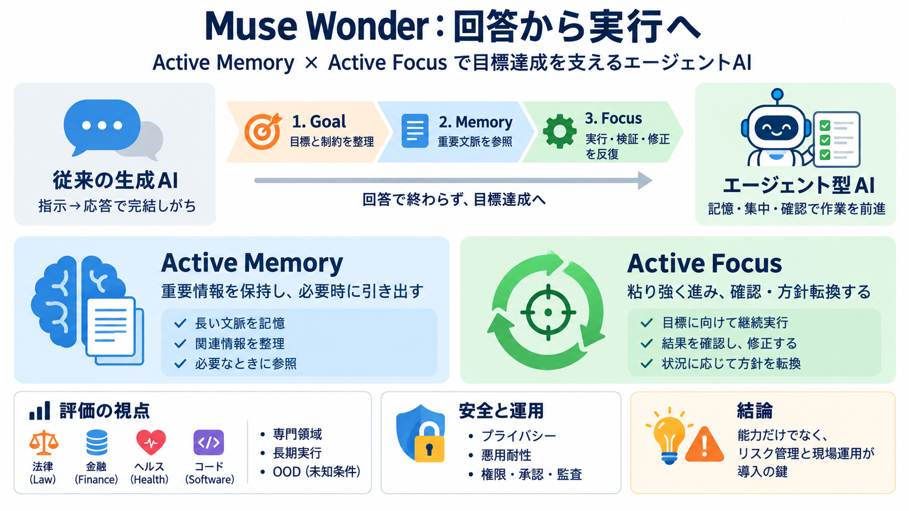

Muse Wonder (Oct 2026)
Summary: Meta introduces Muse Wonder and Muse Wonder Full as frontier models for personal and professional agentic tasks…

エージェント実用化の視点
Active Memory と Active Focus を軸に、個人・仕事の「目標達成」を前に進めるエージェントAIの要点を圧縮して整理します。
対象：一般 / 技術寄り（ただし運用・安全にも触れる）
回答で終わらない
生成AIは「答える」だけでなく、記憶・集中・ツール操作で作業を前へ進める方向へ進化しています。 Muse Wonderシリーズは、この“エージェント（agentic tasks）”を実用水準に近づけることを狙います。
頭と手を分ける
Museの中核は Active Memory と Active Focus。どちらも「場当たり」ではなく、作業の質と持続を設計で支える考え方です。
実行パイプライン
エージェント型では、会話や文脈から必要情報を呼び出し（Active Memory）、目標へ向けて試行錯誤と確認を回す（Active Focus）ことが要点です。
専門タスクで検証
法律・金融・ヘルス等の領域ベンチマークに加え、長期のソフトウェア開発に近い課題で持続的実行能力も検証しています。
ベンチ一点突破を回避
単一ベンチの最高得点（benchmaxxing）だけでなく、訓練で狙っていない領域でも性能が伸びる点を示そうとしています。 これは個人エージェントの「組み合わせの無限性」に対応した問題意識です。
同じ舞台ではない
訓練に近い課題だけ（in-distribution）では、現実の個人・職場の条件差に負けます。 だから out-of-distribution を重視する考え方が出てきます。
評価→導入の順序
記事が示す安全性は「完全な保証」ではなく、評価と対策の方向性です。 実運用では、どの失敗モードを抑え、どこに人の承認を置くかが重要になります。
悪用とプライバシー
エージェントは個人に近い情報（メッセージ、カレンダー、プライベート文書）へアクセスし得るため、プライバシー配慮と悪用耐性が不可欠とされています。 特に CBRN やサイバー悪用への抵抗が重要視されています。
判断材料が足りない
記事からは、安全性の定量情報（評価プロトコル、残存リスク、軽減の条件）が十分に見えません。 また、個人情報前提のエージェントでは、権限・データ保持・監査可能性・同意設計が導入成否を左右します。
FAQを圧縮
よくある疑問は「Active Memory / Active Focus の定義」「OODの重要性」「安全性の扱い」に集約されます。
まとめ：導入は慎重に
Muse Wonderシリーズは、Active Memory / Active Focus を中心に、専門領域と長期実行を通じて“目標達成の実行”を狙う方向性です。 ただし安全性は評価と運用設計が前提なので、ベンチの良さを過信せず、現場の異常系まで別途検討する必要があります。
Summary: Meta introduces Muse Wonder and Muse Wonder Full as frontier models for personal and professional agentic tasks…
Two trained behaviours carry the launch. Active Memory keeps context about the user across conversations and pulls back …
Meta released Muse Wonder and Muse Wonder Full on Oct. 12, 2026, its first frontier-class models, per TechCrunch. Wonde…
The release follows Meta’s introduction of Muse Spark and comes 14 months after the company began rebuilding its artific…
In keeping with Meta’s interest in developing personal assistants that can perform tasks over a long period, the company…